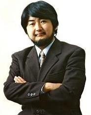
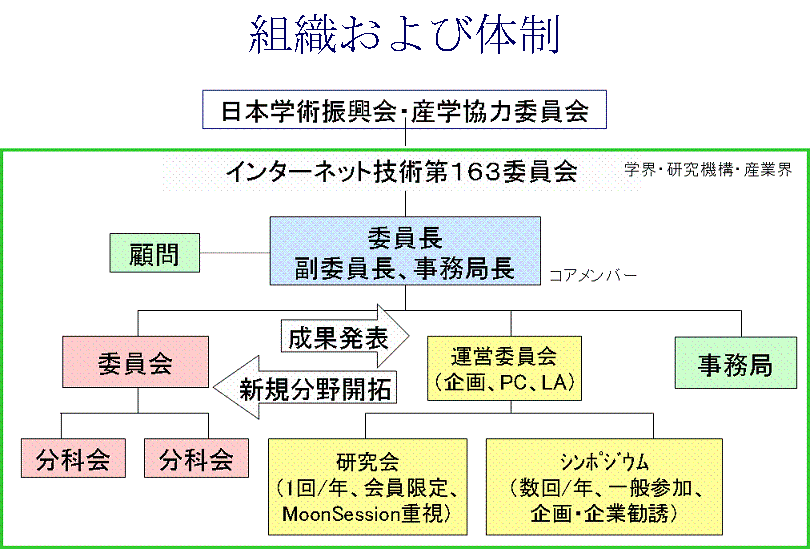

委員長の挨拶

インターネット技術第 163 委員会 (略称: ITRC) はわが国におけるインターネットを早くから支えてきた JAIN と TISN のネットワーク運用者、管理者研究者を中心に、インターネットの幅広い分野間・産学間・世代間の交流を促進する事を目的として、日本学術振興会のご支援のもと、設立された組織です。
これまでも、大学間ネットワーク・遠隔講義・小中高へのインターネットの普及・自治体を始めとする地域へのインターネットの普及・身障者のためのインターネットアクセス技術の開発など、常に新しい問題に取り組んで参りました。草の根のインターネットが世の中の大きな潮流となった今でも大学を中心とした若いメンバーによる活動は、常にインターネットの新しい流れを作り続けています。
構成員
- 委員長
- 下條真司 (大阪大学)
- 副委員長
- 池永全志 (九州工業大学)
- 大崎博之 (大阪大学)
- 真野浩 ((株) アライドテレシス開発センター)
- 事務局長
- 岡部寿男 (京都大学)
- 幹事
- 秋山豊和 (京都産業大学)
- 西村浩二 (広島大学)
- 監事
- 中山雅哉 (東京大学)
- 松嶋保和 (富士通)
- 運営委員
- ITRC 第 3 期運営委員のページ参照
構成図

現在の委員数
- 学界 (30 大学): 47 名
- 研究機構など (6 機構): 10 名
- 産業界 (25 社): 25 名